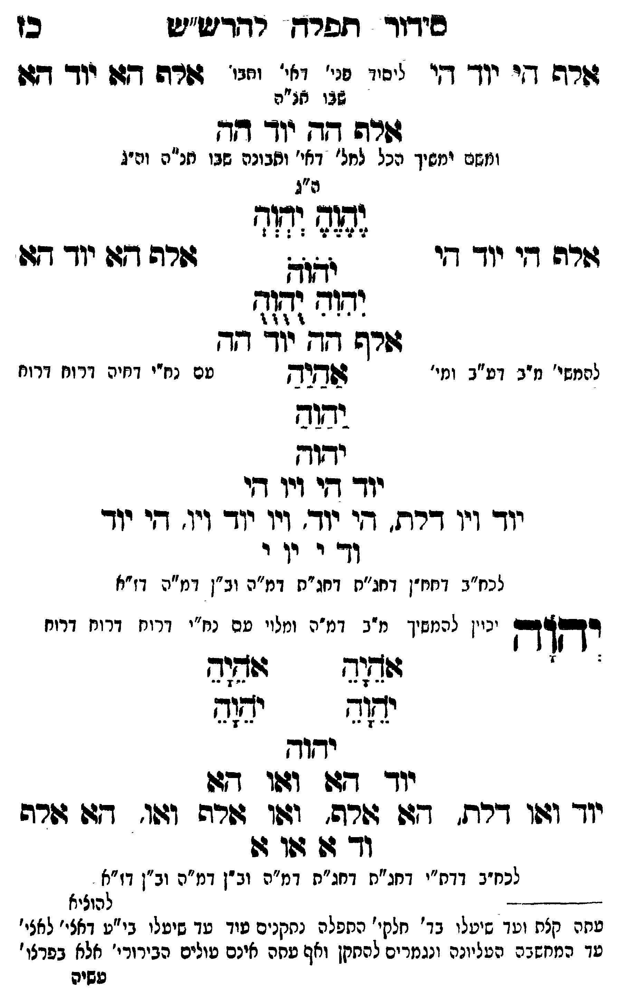

Neue Klartextfassung
=== טבלה === [טור ימין] אלף הי יוד הי [טור אמצעי] [ליסוד פני' דאי' ותבו' שבו חו"ח] [טור שמאל] אלף הא יוד הא === סוף טבלה === אלף הה יוד הה [ומשם ימשך הכל למל' דאי' ותבונה שבו חו"ח וה"ג] === טבלה === [טור ימין] אלף הי יוד הי [טור אמצעי] [ה"ג] יֶהֶוֶהֶ יְהְוְהְ יֹהֹוֹהֹ יִהִוִהִ יֻהֻוֻהֻ [טור שמאל] אלף הא יוד הא === סוף טבלה === אלף הה יוד הה [להמשיך מ"ב דע"ב ומי' עם נח"י דחיה דרוח:] אַהַיַהַ יַהַוַהַ יהוה יוד הי ויו הי יוד ויו דלת הי יוד ויו יוד ויו הי יוד וד י וי י [לכח"ב דחח"ן דחג"ת דחג"ת דמ"ה וב"ן דמ"ה דז"א] יְהוָה [יכוין להמשיך מ"ב דמ"ה ומלויו עם נח"י דרוח דרוח דרוח] === טבלה === [טור ימין] אָהָיָהָ יָהָוָהָ [טור שמאל] אָהָיָהָ יָהָוָהָ === סוף טבלה === יהוה יוד הא ואו הא יוד ואו דלת, הא אלף, ואו אלף ואו, הא אלף וד א או א [לכח"ב דדת"י דחג"ת דחג"ת דמ"ה וב"ן דמ"ה וב"ן דז"א]
Original gegen neue OCR · Niqqud für Vergleich ausgeblendet
Original
=== טבלה === [טור ימין] אלף היK058-001 יוד הי [טור אמצעי] [ליסוד פני' דאי' ותבו'K058-002 שבו חו"ח] [טור שמאל] אלף הא יוד הא === סוף טבלה === אלף הה יוד הה [ומשם ימשךK058-003 הכל למל' דאי' ותבונה שבו חו"ח וה"ג] === טבלה === [טור ימין] אלף היK058-004 יוד הי [טור אמצעי] [ה"ג] יהוה יהוה יהוה יהוה יהוה [טור שמאל] אלף הא יוד הא === סוף טבלה === אלף הה יוד הה [להמשיך מ"בK058-005 דע"ב ומי' עםK058-006 נח"י דחיה דרוח:] אהיה יהוה יהוה יוד היK058-007 ויו הי יודK058-008 ויו דלת הי יוד ויו יוד ויו הי יודK058-009 וד י ויK058-010 י [לכח"ב דחח"ן דחג"תK058-011 דחג"ת דמ"ה וב"ן דמ"ה דז"א] יהוה [יכויןK058-012 להמשיך מ"ב דמ"ה ומלויו עםK058-013 נח"י דרוח דרוח דרוח] === טבלה === [טור ימין] אהיה יהוה [טור שמאל] אהיה יהוה === סוף טבלה === יהוה יוד הא ואו הא יוד ואו דלת, הא אלף, ואו אלף ואו, הא אלף וד א או א [לכח"ב דדת"י דחג"תK058-014 דחג"ת דמ"ה וב"ן דמ"ה וב"ן דז"א]K058-015
OCR · fehlbar
סידוד ופרץ רדד"ש"יט כן שרש די יוך די יייי ג- גל - יייי זרה דזוK058-001 יוד דוK058-002 שבו אג"ה גזורה 7 יוך דזד ונזזם ימפיךK058-003 הכל למל' דאי' ותבונה שבו מזנ"ה וב"ג ה"ג מז י([7 וזרה די יוך די ז( גזרה דגוK058-004 יוד תש (צנז[[ גורש ד[ד- יוך דז להמשי' ז"ב.K058-005 דע"ב ומי' ומוח טםK058-006 נח"י דחיה דרוח דרוז וזוב ידוד יוךך דץיK058-007 ויו דזי יוך וין דרת . די יוך'K058-008 ויו ייך וין' די יוךK058-009 וד י יוK058-010 י לכ"ג דחיז"ן דחג"חK058-011 דחג"ת דמ"ה וב"ן דמ"ר דז"י] וב ו ו לה ו ל "ה ו ז' ו ד יקץךך כויןK058-012 להמשיך מ"ב דמ"ה ומלוי טםK058-013 נח"י דרוח דרוח דרוח ' ' זמז ציחוב יב יז(ף יחוך יודך 9477 וזוו (דגו יוך וגן דרת. 7ב זורה' ושן גדורה וגו. 47: גדרה וך 77 שו 4: לכח"ב דדח"י דחג"חK058-014 דחג"ת דמ"ה וב"ן דמ"ה וב"ן דז"א לללללללא להוציא עתה קצת וטך שיטלו בד' חלקי' התפלה נחקנים טוד עד שיעלי בי"ע דאצי' לאצי' עך המחשגה העליונה ונגמרים להתקן ואף טחה אינם טולים הבירורי' אלא בפרצו' עשיהK058-015